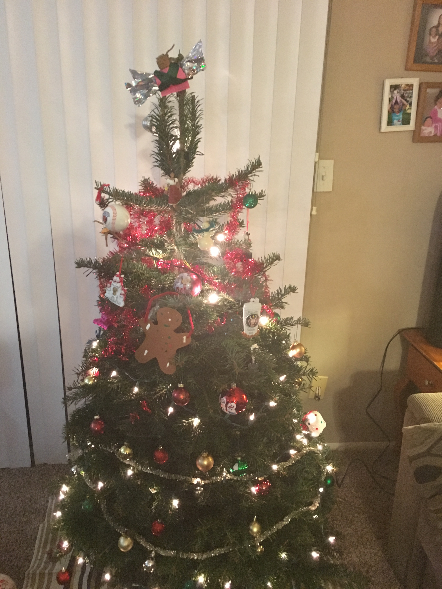
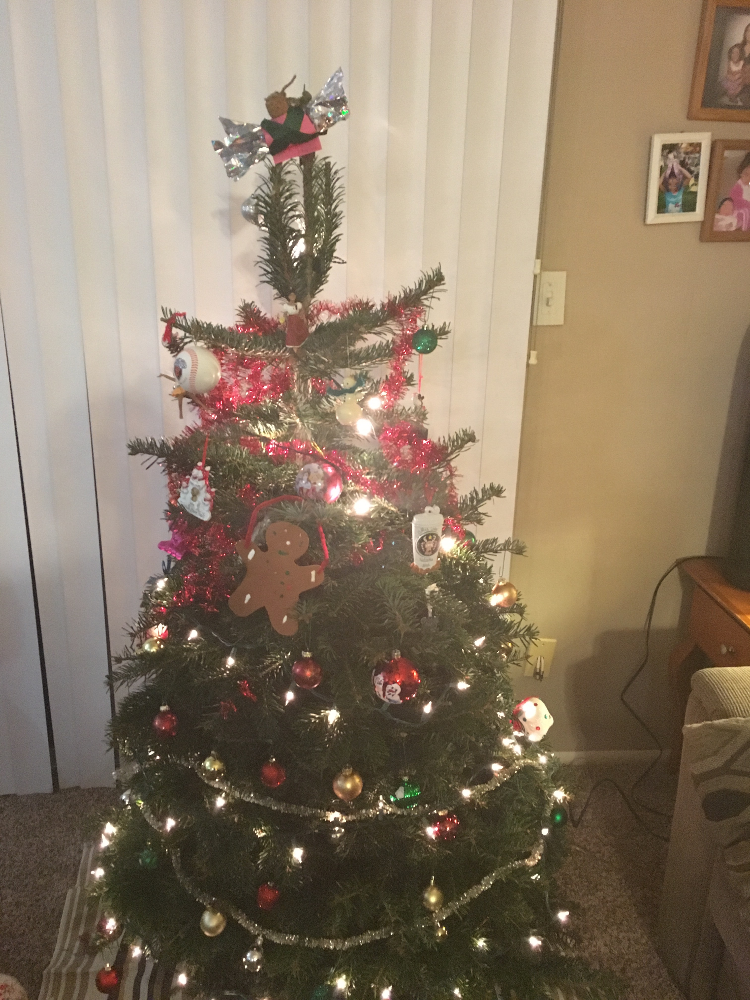

The first xmas tree
 Today, we bought our first Christmas Tree. For me, Christmas hasn't been my favorite holiday, but I should make it something of it for my family.
 Today, we bought our first Christmas Tree. For me, Christmas hasn't been my favorite holiday, but I should make it something of it for my family.